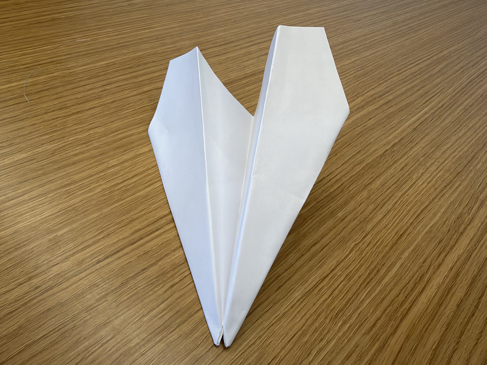

In this activity, I built a paper airplane by following step-by-step folding instructions from Claude, an AI assistant. The rule was that I could not add or change any folds on my own. I had to do exactly what Claude told me, in the order it told me, even when I thought a different fold would work better.
Handing over every decision to the AI showed how much a builder normally fills in from experience. Claude could not see the paper, so its instructions had to be precise enough for me to follow without guessing. The photo above shows the finished airplane that came out of Claude’s instructions.